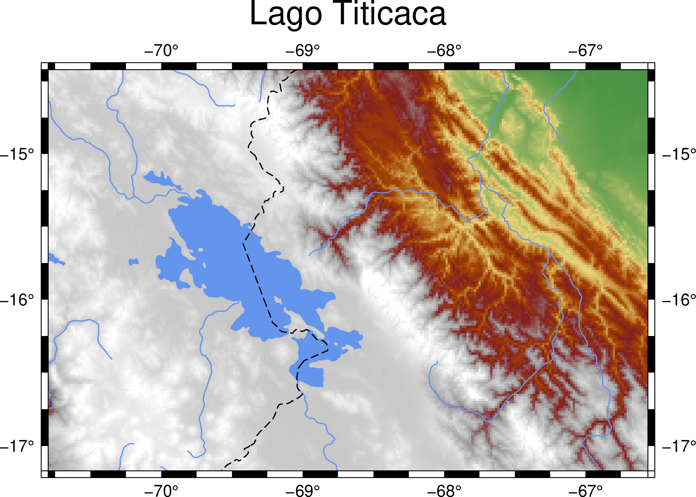

為地形圖上色
Contents
5. 為地形圖上色#
注意
本教學適用於 GMT 6 的現代模式。如須參閱 GMT 6 (傳統模式) 與 GMT 4-5 繪製相同地圖的教程，請至這裡。
把地圖依照不同屬性、在不同區域著色，可以把龐大的資料有效視覺化。最常用來著色的屬性，高度絕對是其中之一。在典型的地形圖中，不同的海拔高度會套上不同的顏色。本章中將會詳細說明如何利用地表的不同高度，製作彩色的地形圖。
5.1. 目標#
製作一張的的喀喀湖 (Lago Titicaca) 的分層設色地形圖，如下圖所示。的的喀喀湖位於秘魯和玻利維亞交界，面積達 8372 平方公里。特殊的是，湖面位置的海拔高達 3812 公尺，是全世界最高的商業通航湖泊1。圖中的藍色線條表示河流，注意右側的河流其實是亞馬遜河的源頭，而且並沒有和的的喀喀湖連接。黑色的虛線是兩國國界。地形圖的顏色從海拔 0 至 5000 公尺，依循以下顏色過渡：綠色 -> 黃色 -> 紅色 -> 灰色 -> 白色，其中 2800 公尺以上即開始以灰色系展示。這麼高的湖泊，位於一片白色系背景當中，更增添了些許雪國的氣氛 (實際上，的的喀喀湖冬天非常乾燥，幾乎不會下雪2)。
{kind=link}
直接觀看指令稿
5.2. 使用的指令與概念#
grdinfo- 查閱網格檔的基本資訊grdimage- 繪製著色影像coast- 繪製河流、湖泊與國界使用 GMT 伺服器的地形資料繪圖
從 cpt-city 尋找適合地圖的色階檔
如何疊加輸出圖層
使用腳本、
gmt begin和gmt end，一次下達所有繪圖指令
5.3. 取得資料#
這次我們必須要先取得繪圖區域的地形資料。GMT 6 本身有提供全球的地形資料，不過是放在遠端伺服器上，當使用者需要時才會下載到本機電腦中。這些地形資料的檔名為：
@earth_relief_rru
其中 rr 是解析度的大小，而 u 是單位 (有度 d、分 m、秒 s 可選)。我們在這邊要使用的是全球解析度 1 弧分的地形高程，因此檔名為 @earth_relief_01m。其他可供選擇的資料，皆在 GMT 官方手冊中有說明。如果你想查閱地形資料的更多資訊，可以透過終端機輸入 grdinfo 指令來達成。執行畫面會像如下所示：
$ gmt grdinfo @earth_relief_01m
earth_relief_01m: Download file from the GMT data server [data set size is 214M].
earth_relief_01m: Earth Relief at 1x1 arc minutes obtained by Gaussian Cartesian filtering (1.9 km fullwidth) of SRTM15+V2 [Tozer et al., 2019].
/home/whyj/.gmt/server/earth_relief_01m.grd: Title: Earth Relief at 01 arc minute
/home/whyj/.gmt/server/earth_relief_01m.grd: Command: grdfilter SRTM15+V2.nc -Fg1.9 -D1 -I01m -rg -Gearth_relief_01m.grd=ns --IO_NC4_DEFLATION_LEVEL=9 --PROJ_ELLIPSOID=Sphere
/home/whyj/.gmt/server/earth_relief_01m.grd: Remark: Obtained by Gaussian Cartesian filtering (1.9 km fullwidth) from SRTM15+V2.nc [Tozer et al., 2019; http://dx.doi.org/10.1029/2019EA000658]
/home/whyj/.gmt/server/earth_relief_01m.grd: Gridline node registration used [Geographic grid]
/home/whyj/.gmt/server/earth_relief_01m.grd: Grid file format: ns = GMT netCDF format (16-bit integer), CF-1.7
/home/whyj/.gmt/server/earth_relief_01m.grd: x_min: -180 x_max: 180 x_inc: 0.0166666666667 (1 min) name: longitude n_columns: 21601
/home/whyj/.gmt/server/earth_relief_01m.grd: y_min: -90 y_max: 90 y_inc: 0.0166666666667 (1 min) name: latitude n_rows: 10801
/home/whyj/.gmt/server/earth_relief_01m.grd: z_min: -10907 z_max: 8170 name: elevation (m)
/home/whyj/.gmt/server/earth_relief_01m.grd: scale_factor: 1 add_offset: 0
/home/whyj/.gmt/server/earth_relief_01m.grd: format: netCDF-4 chunk_size: 129,129 shuffle: on deflation_level: 9
訊息的前兩行在有需要下載時才會出現。下載下來的檔案預設是放在 ~/.gmt/server/ 這個位置，之後 GMT 會先查看這個位置有沒有已經下載的檔案，如果沒有的話才會再次下載。下載檔檔名為 earth_relief_01m.grd，副檔名 .grd 表明了它是某種「網格檔 (grid)」，亦即地球的二維表面被切割成網格狀，每個「格子」內，都有一個相對應的高度數據。(非常類似 GeoTiff 的概念，只不過在 GeoTiff 中，相對應的術語稱為「像素」而非「網格點」。) .grd 檔是 netCDF 格式常見的附檔名，也就是說它可被 GMT 讀取並作圖。另外，從 grdinfo 的輸出中你還可以看到其他的基本資訊，像是
網格檔是從 SRTM15+V2 這個資料庫重新取樣而來。
X 從 -180 度到 180 度，Y 從 -90 度到 90 度，意味著此網格檔涵蓋全球的範圍。
網格大小是 0.0166666666667，也就是 1/60 度 (1 弧分)。
總共有 21601 x 10801 = 233312401 個格點 (也就是兩億三千三百萬像素)。
Z 值 (高度) 從 -10907 到 8170 公尺。為什麼最高的地方不是 8848 公尺 (聖母峰的高度)? 那是因為網格的解析度還是不夠高，1 弧分其實只相當於 1 至 2 公里才取一個點而已。
5.4. 操作流程#
從本章開始，我們需要使用兩個以上的 GMT 指令製作地圖。在上一章介紹過的 coast 用來畫向量式資料 (河流、湖泊以及國界)，而在本章中新介紹的 grdimage 則用來畫地形起伏。因為上一章介紹的 -png 選項只適用於單一指令，所以在本章我們要用另一種更通用的方式指定輸出檔。具體做法是使用 gmt begin 和 gmt end 這兩個關鍵字串把其他所有繪圖指令包起來，像這樣：
$ gmt begin [輸出地圖主檔名，不用加附檔名] [格式] # 輸入後按下 enter
$ [繪圖指令1] # 輸入後按下 enter
$ [繪圖指令2] # 輸入後按下 enter
...
$ gmt end
你可以一行一行的在命令列中打好指令再送出執行，不過為了修改方便，我們通常會選擇把所有的指令先寫在腳本內，再執行此腳本以一次送出所有指令給電腦。在本章中，我們就要來介紹這種更爲便捷的方式。
畫地圖的第一步就是決定繪製區域。如同前一章「製作第一張地圖」所述，我們可以使用 Google Map 等工具決定區域。這裡我們考慮到高度的呈現效果，選擇經度從 -70.8 到 -66.56 (負值表示西經)，緯度從 -17.17 到 -14.42 (負值表示南緯。)

圖 5.1 本次作圖區域在 Google Map 上呈現的樣子。#
使用 grdimage 呈現地形數據，最少需要提供兩個參數，分別是 輸入檔 和 -J (投影方法和地圖大小)。在這裡我們也需要使用 -R 指定繪製區域，如果不加 -R 的話，GMT 會把全網格檔的資料話在地圖上 (因爲我們使用的是全球地形資料，所以輸出會是全球地圖)。就讓我們來畫一張跟前一章一樣寬度的地圖吧。請建立新文字檔，檔名可以為 titicaca.bash 或任何你喜歡、且符合作業系統格式慣例的名字。然後在檔案中輸入：
gmt begin titicaca png
gmt grdimage @earth_relief_01m -R-70.8/-17.17/-66.56/-14.42r -JM6i
gmt end
你會注意到我們在 gmt grdimage 前面多加了四個空格，這純粹只是製造縮排效果，讓閱讀腳本的人知道這行被包在 gmt begin 和 gmt end 之間，增加腳本的可讀性。縮排與否和空格數量不會影響腳本的執行。如需 -R 與 -J 選項的語法說明，請至「製作第一張地圖」中查閱。存檔後，在終端機模式下前往 titicaca.bash 所在的資料夾，然後執行腳本 (以 Linux 系統爲例)：
$ bash titicaca.bash
備註
不同的作業系統的腳本會有不同的額外設定，可以讓你的腳本能夠更方便的執行，詳情請參閱「基本概念與名詞」。
輸出的圖檔 titicaca.png 開啟後應該會是如下的圖案：

有點難以看懂？這是因為 GMT 預設的套色沒那麼適合這個地區的緣故。在未指定地圖的套色下繪製 @earth_relief 地形資料時，GMT 會用一套名為 geo 的色階來呈色。這個色階的顏色如下所示

圖中的 0 和 1 的顏色，也就是深藍色和白色，會對應到地圖範圍中最低和最高的的地方。有沒有辦法換成另一種比較好看的色階？當然可以，GMT 有數種方法可以製造或調整色階，但這邊我們要先來看一種最簡單的方法：直接下載已經做好的色階來用。
cpt-city 網站蒐集了不少常用的色階，其中也包括 GMT 格式的色階檔。GMT 色階檔通常使用副檔名 .cpt，是 color palette table (色階表) 的縮寫。你可以在網站中搜尋你想要的色階，例如這個網頁就列了許多最常被下載的 .cpt 檔。我們這次來用其中的一個叫做 mby 的色階看看。按下 mby 的色階表，你應該就會看到如下頁面

注意圖中的 -8000 … 5000，這是指此色階已經被指定在 -8000 到 5000 公尺之內呈現了。按一下網頁上的 cpt 連結就可以把此色階檔下載下來。
為了方便起見，這邊也提供了 mby.cpt 的下載點。
使用 grdimage 中的 -C 選項，就可以指定要用的色階，只要在 -C 後接續色階檔檔名就行了。所以我們更新版的腳本為：
gmt begin titicaca png
gmt grdimage @earth_relief_01m -R-70.8/-17.17/-66.56/-14.42r -JM6i -Cmby.cpt
gmt end
使用相同的方式再執行一次腳本，這次地圖會變成這樣

看起來已經有模有樣了。
這個地圖目前有個大問題，就是我們雖然知道地圖中大部份的區域都很高 (灰白色)，但是卻看不到我們的主角的的喀喀湖。這是因為地形資料只有記載高度，並沒有記載地表的狀態，所以光靠 grdimage 是無從得知哪邊是湖泊、海洋等等地貌的。因此，為了標上的的喀喀湖的位置，我們需要呼叫 coast 這個指令，利用內建的水體資料幫我們畫上湖泊，順便再畫上邊框。
當一張地圖包含兩個以上的作圖指令時，越上方的圖層要越後畫。由於我們希望 coast 畫的湖泊水體疊加在 grdimage 畫的地形資料上，所以 coast 指令要排在 grdimage 之後。再次打開腳本，把內容修改爲：
gmt begin titicaca png
gmt grdimage @earth_relief_01m -R-70.8/-17.17/-66.56/-14.42r -JM6i -Cmby.cpt
gmt coast -Scornflowerblue -Baf -B+t"Lago Titicaca"
gmt end
關於 coast 的指令解說，請至「製作第一張地圖」查看。另外，你或許會發現在 coast 中，沒有 -R 和 -J 選項。當不指定這些選項時，GMT 會自動沿用上次的設定，也就是 grdimage 的 -R 與 -J 資訊，省下重複輸入相同內容的麻煩。
小訣竅
coast的-S選項會套用在所有水域。如果你的地圖中有海又有湖，而你想分別為海跟湖指定不同顏色，可以試試看換成-C選項。因為本圖沒有海域，-Scornflowerblue和-Cl/cornflowerblue具有相同效果，不過後者其實只會為湖泊填上顏色。讓我們看一下
coast中的兩個-B選項。實際上它們也可以加在grdimage中，因為邊框屬於哪個圖層在本例中不影響地圖疊加，所以效果會一模一樣。
在終端機中執行腳本，然後開啟輸出檔，應該會看到下圖：

這次總算有個令人滿意的輸出結果。接下來，我們還可以利用 coast 的其餘功能來美化這張地圖。首先是 -I，它可以幫我們標上河流，語法為
-I編號/畫筆
其中的編號可以為不同的英數字，對應到不同等級的河流；而畫筆則用來指定河流的繪圖樣式。這裡我們要使用 r 這個編號，它對應的是所有的永久河流。畫筆樣式則使用 0.7p,cornflowerblue。
另外一個 coast 的選項是 -N，它可以在地圖上標上政治性的邊界。語法同樣為
-N編號/畫筆
這裡的編號一樣可以為不同的英數字，對應到不同等級政治邊界 (國界、州界等)。我們要用的是 1，亦即標上國界。至於畫筆樣式，則使用 0.7p,,--，注意這裡我們空下了「顏色」的欄位，因此 GMT 會使用預設值「黑色」進行繪圖。在「線條樣式」欄位中，我們選擇 --，這樣國界就會以虛線呈現。
備註
有關畫筆的進階樣式設定，例如設定線條樣式、利用 RGB 值自訂顏色等，會在「畫筆與調色技巧」詳加描述。
把 -N 和 -I 以及他們的設定參數加入我們的 coast 指令中，就完成了這次的地圖設計。
5.5. 指令稿#
本地圖的最終指令稿如下：
gmt begin titicaca png
gmt grdimage @earth_relief_01m -R-70.8/-17.17/-66.56/-14.42r -JM6i -Cmby.cpt
gmt coast -Ir/0.7p,cornflowerblue -N1/0.7p,,-- -Scornflowerblue -Baf -B+t"Lago Titicaca"
gmt end
備註
「繪製地形設色圖：以 70.8E - 66.56E，17.17S - 14.42S 為邊界，麥卡托投影，地圖橫向寬 6 吋，套色使用 mby.cpt 內的色階表。使用 cornflowerblue 把湖泊和河流上色，畫上國界，四邊繪製邊框與刻度數值，自動選擇數值間隔與刻度間隔，不畫格線，標題為 Lago Titicaca，存檔為 titicaca.png。」
觀看最終版地圖
5.6. PyGMT 指令稿#
使用 PyGMT，可以如下腳本繪製本地圖：
import pygmt
# 取得地形資料
region = [-70.8, -66.56, -17.17, -14.42]
grid = pygmt.datasets.load_earth_relief(resolution='01m', region=region)
# 繪圖
fig = pygmt.Figure()
fig.grdimage(grid, region=region, projection='M6i', cmap='mby.cpt')
fig.coast(rivers='r/0.7p,cornflowerblue', borders='1/0.7p,,--', water='cornflowerblue', frame=['af', '+t"Lago Titicaca"'])
fig.show()
fig.savefig('titicaca_pygmt.png')
你可以使用以下的 Binder 連結嘗試此程式碼：
5.7. 習題#
畫出貝加爾湖 (Lake Baikal 或 Baygal nuur) 與週邊區域的地形設色圖。貝加爾湖是全世界最深的湖泊，也是世界第七大湖，位於俄羅斯，南端接近蒙古的邊界。
從地圖中可看到有幾條河流注入或流出貝加爾湖？
貝加爾湖週邊的海拔為何？湖底的海拔為何？你的地圖分別用什麼顏色表示這兩個海拔？
- 1
Data Summary: Lago Titicaca (Lake Titicaca). International Lake Environment Committee Foundation - ILEC. Retrieved 2009-01-03.
- 2
ClClimatological Information for Juliaca, Peru. Hong Kong Observatory.